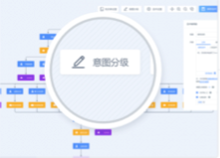

<!-- =============================话术编辑器================================-->
<!-- 内容 -->
<div v-if="_nodeType == 'end'">
	<div class="speech-content-container" :id="'_main-' + editableTabsName"></div>
</div>
<div v-else>
	<el-tabs v-model="flowTypeName" class="speechTab" @tab-click="tabClick">
		<el-tab-pane label="正常" name="main" class="speechTabPanel">
			<div v-if="_nodeType == 'start'">
				<div class="speech-content-container-no-top" :id="'_main-' + editableTabsName"></div>
			</div>
			<div v-else>
				<el-tabs v-model="editableTabsName" type="card" :editable="!isDisabled" @edit="handleTabsEdit" @tab-click="speechTabClick">
					<el-tab-pane
					v-for="(item, index) in editableTabs"
					:key="item.name"
					:label="item.title"
					:name="item.name"
					:closable="!isDisabled"
					>
						<div :class="[((editableTabsName == maxTabName) && (editableTabsName < _speechRound)) ?  'speech-content-container-no-bottom' : 'speech-content-container']" :id="'_main-' + item.name"></div>
						<div class="hint" v-if="((editableTabsName == maxTabName) && (editableTabsName < _speechRound))">
							
							{{mxResources.get('hungupTooltip')}}
						</div>						
					</el-tab-pane>
				</el-tabs>		
			</div>
		</el-tab-pane>
		<el-tab-pane label="静默" name="quiet" class="speechTabPanel">
			<el-tabs v-model="editableTabsName" type="card" :editable="!isDisabled" @edit="handleTabsEdit" @tab-click="speechTabClick">
				<el-tab-pane
				v-for="(item, index) in editableTabs"
				:key="item.name"
				:label="item.title"
				:name="item.name"
				:closable="!isDisabled"
				>
					<div :class="[((editableTabsName == maxTabName) && (editableTabsName < _speechRound)) ? 'speech-content-container-no-bottom' : 'speech-content-container']"  :id="'_quiet-' + item.name"></div>
					<div class="hint" v-if="((editableTabsName == maxTabName) && (editableTabsName < _speechRound))">
						
						{{mxResources.get('hungupTooltip')}}
					</div>					
				</el-tab-pane>
			</el-tabs>
		</el-tab-pane>
		<el-tab-pane label="异常" name="exception" class="speechTabPanel">
			<el-tabs v-model="editableTabsName" type="card" :editable="!isDisabled" @edit="handleTabsEdit" @tab-click="speechTabClick">
				<el-tab-pane
				v-for="(item, index) in editableTabs"
				:key="item.name"
				:label="item.title"
				:name="item.name"
				:closable="!isDisabled"
				>
					<div :class="[((editableTabsName == maxTabName) && (editableTabsName < _speechRound)) ? 'speech-content-container-no-bottom' : 'speech-content-container']"  :id="'_exception-' + item.name"></div>
					<div class="hint" v-if="((editableTabsName == maxTabName) && (editableTabsName < _speechRound))">
						
						{{mxResources.get('hungupTooltip')}}
					</div>						
				</el-tab-pane>
			</el-tabs>
		</el-tab-pane>
		<el-tab-pane label="复述" name="retell" class="speechTabPanel">
			<el-tabs v-model="editableTabsName" type="card" :editable="!isDisabled" @edit="handleTabsEdit" @tab-click="speechTabClick">
				<el-tab-pane
				v-for="(item, index) in editableTabs"
				:key="item.name"
				:label="item.title"
				:name="item.name"
				:closable="!isDisabled"
				>
					<div :class="[((editableTabsName == maxTabName) && (editableTabsName < _speechRound)) ? 'speech-content-container-no-bottom' : 'speech-content-container']"  :id="'_retell-' + item.name"></div>
					<div class="hint" v-if="((editableTabsName == maxTabName) && (editableTabsName < _speechRound))">
						
						{{mxResources.get('hungupTooltip')}}
					</div>					
				</el-tab-pane>
			</el-tabs>
		</el-tab-pane>
	</el-tabs>
</div>
<!-- 使用、试听音频  -->
<div class="w-button-group">
	<input type="button" value="使用音频" class="sound-record-btn"
		@click="showUploadRecordDialog();"
		:disabled="isDisabled">
	</input> 
	<!--<input type="button" value="话术试听" class="sound-play-btn"-->
		<!--onclick="$.utils._dialogVue.videoVisible = true"-->
		<!--:disabled="isDisabled">-->
	<!--</input>-->
	<input type="button" value="话术试听" class="sound-play-btn"
		   @click="createVideoPlayTest"
		   :disabled="isDisabled">
	</input>
</div>
<div style="padding: 10px 0 0; font-size: 14px;">
	注：点击查看<a href="/index.html#/help" target="_blank">变量参数内容规范及模板</a>
</div>
<!-- 意图分类级别 -->
<div style="width: 100%;display: block; padding: 10px 0 0;">
	{{mxResources.get('intentionLevel')}}：
	<span style="color: #409EFF;">{{intentionLevel}}</span>
    <el-tooltip class="item" effect="light" popper-class="speech-editor-tip" placement="bottom-end" v-if="$.utils.getIntentionLevelDescription(intentionLevel).length > 0" >
        <div slot="content">{{$.utils.getIntentionLevelDescription(intentionLevel)}}</div>
        <i class="el-icon-question"></i>
    </el-tooltip>
	<el-popover
			ref="popover4"
			placement="right"
			width="400"
			trigger="hover">
		<el-row >
			<el-col :span="12">
			   <span style='font-family: "Helvetica Neue",Helvetica,"PingFang SC","Hiragino Sans GB","Microsoft YaHei","微软雅黑",Arial,sans-serif;line-height:1.5'>
				   意图分类级别在“意图分类”中配置，可以帮助您对话术模板中的每个意图进行自动标记并归类，便于二次人工跟进，和高质量用户画像管理。
			   </span>
			</el-col>
			<el-col :span="12">
				
			</el-col>
		</el-row>
	</el-popover>
	<span class="el-icon-question" v-popover:popover4 v-if="$.utils.getIntentionLevelDescription(intentionLevel).length <= 0"></span>
</div>
<!-- 复选框 -->
<el-checkbox-group v-model="checkedList" @change="checkListChange">
	<el-checkbox v-for="item in checkList" :label="item" :key="item" :disabled="isDisabled" @change="checked=>checkItemChange(item,checked)">
		{{mxResources.get(item)}}
	    <el-tooltip v-if="item != 'isEnd'" class="item" effect="light" placement="bottom-end" popper-class="speech-editor-tip">
	        <div slot="content">{{mxResources.get(item + 'Content')}}</div>
	        <i class="el-icon-question"></i>
	    </el-tooltip>	
	</el-checkbox>
</el-checkbox-group>
<!-- 异常跳转 -->
<div v-if="EXCSkipVisible">
	<el-select v-model="excSkipNode" clearable filterable placeholder="选择异常状态下强制跳转的意图" :disabled="isDisabled">
		<el-option
			v-for="item in EXCSkipOptions"
			:key="item.nodeId"
			:label="item.nodeLabel"
			:value="item.nodeId">
		</el-option>
	</el-select>
</div>				